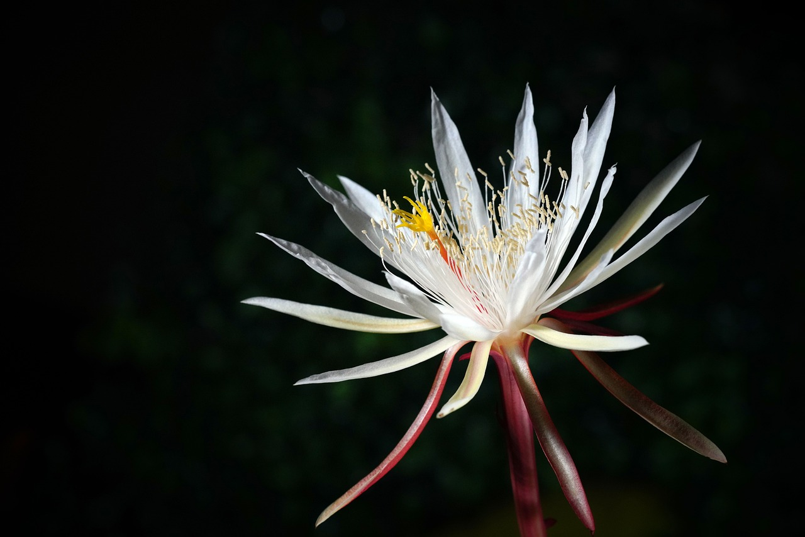

Las suculentas además de guardar la energía del sol, también
almacenan agua, de ahí que su apariencia esté siempre verde, sana y
frondosa. Por tal razón el Feng Shui considera a las suculentas como
plantas para atraer y generar abundancia en nuestro hogar o en cualquier
espacio en el que tengamos una
-
Clasificacion

-
Agavaceas
-
Crasulaseas
-
Cactaceas